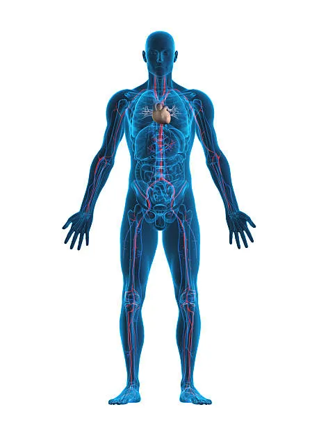

Saviez-vous que le corps humain et les océans partagent bien plus de similitudes qu’il n’y paraît ? Que ce soit dans leur composition chimique, leur rôle essentiel dans l’équilibre de la vie, ou leur capacité à évoluer et s’adapter, ces deux entités semblent être le reflet l’une de l’autre. À travers ce site, nous explorerons les fascinants parallèles entre l’eau salée qui couvre 70 % de notre planète et l’eau qui constitue la majeure partie de notre organisme, révélant ainsi à quel point l’océan et le corps humain sont interconnectés dans leur complexité et leur beauté. Préparez-vous à plonger dans cette exploration captivante où science et poésie se rencontrent !
Les océans recouvrent environ 71 % de la surface de notre planète, formant un réseau complexe qui régule le climat, nourrit des millions d’espèces et abrite certains des plus grands mystères de la Terre. Ces vastes étendues d’eau salée jouent un rôle essentiel dans le cycle de l’eau, la production d’oxygène, et le maintien de la biodiversité. Leur composition chimique, riche en sels minéraux, rappelle étrangement celle du plasma sanguin humain, un écho subtil de notre lien avec ces profondeurs mystérieuses. Les courants océaniques, véritables "artères" de la planète, permettent de transporter chaleur et nutriments, tout comme notre système circulatoire irrigue nos cellules. Mais les océans sont bien plus qu’un simple réservoir de vie. Ils capturent une partie significative du dioxyde de carbone que nous émettons, atténuant ainsi les impacts du changement climatique, et ils servent de source d’inspiration infinie pour les cultures du monde entier. Explorer et préserver ces trésors naturels, c’est non seulement assurer la survie de milliers d’espèces, mais aussi protéger une part essentielle de ce qui nous lie, en tant qu’humains, à la planète que nous habitons. Les océans sont une force vive, dynamique et fragile, qui mérite toute notre attention et notre respect.
Le corps humain est un chef-d'œuvre d'ingénierie biologique, constitué de systèmes interconnectés qui travaillent en harmonie pour maintenir la vie. Composé à environ 60 % d'eau, il reflète l'importance de cet élément essentiel, tout comme les océans qui recouvrent la Terre. Chaque organe, chaque cellule, joue un rôle précis dans cette incroyable machine vivante. Le sang qui circule dans nos veines, chargé d'oxygène et de nutriments, peut être comparé aux courants océaniques qui transportent chaleur et ressources vitales à travers le globe. Notre cœur, tel un moteur incessant, bat pour alimenter cette circulation, rappelant le flux constant des vagues qui rythment les côtes du monde entier. Mais le corps humain est bien plus qu'un assemblage de systèmes biologiques. Il est capable d'apprendre, de s'adapter et de guérir. Sa structure complexe, allant de la robustesse des os à la délicatesse des neurones, reflète une intelligence intrinsèque qui le distingue parmi les êtres vivants. Tout comme les océans abritent une diversité de formes de vie, notre microbiome, ce vaste écosystème de micro-organismes, joue un rôle crucial dans notre santé et notre équilibre. Comprendre et respecter ce microcosme, c’est aussi mieux prendre soin de nous-mêmes. Le corps humain, avec ses mystères et ses capacités étonnantes, reste une source infinie de fascination. C’est à la fois un miracle biologique et une preuve de la complexité et de l’harmonie qui régissent la vie.
Les océans et le corps humain, bien que différents en apparence, partagent une multitude de similitudes qui soulignent leur rôle essentiel dans la préservation de la vie. Ces deux systèmes complexes, décrits dans les textes précédents, sont les piliers de l'équilibre de notre planète et de notre existence. Tout comme les océans recouvrent 71 % de la Terre, l’eau constitue environ 60 % de notre corps, rappelant à quel point l’eau est au cœur de la vie. La composition chimique de l’eau salée, riche en minéraux, trouve un écho dans le plasma sanguin humain, une preuve subtile mais fascinante de cette interconnexion naturelle. De la même manière que les courants océaniques distribuent chaleur et nutriments à travers le globe, le système circulatoire transporte oxygène et énergie dans notre organisme. Les deux systèmes se distinguent également par leur capacité à réguler et à protéger. Les océans absorbent le dioxyde de carbone, contribuant à atténuer le changement climatique, tandis que notre corps dispose de mécanismes sophistiqués pour s'adapter et se défendre face aux agressions extérieures. La richesse des écosystèmes marins, avec leur incroyable diversité, trouve un parallèle dans notre microbiome, cet univers invisible mais indispensable à notre santé et notre équilibre. Ces ressemblances ne sont pas qu’un hasard biologique. Elles rappellent que nous faisons partie intégrante d’un système plus vaste, où chaque élément est interconnecté. Prendre soin des océans revient à protéger un miroir de notre propre existence. Car tout comme l’homme ne peut survivre sans son cœur ou ses poumons, la Terre ne saurait prospérer sans ses océans. En contemplant ces similitudes, nous réalisons que préserver l’un revient à honorer l’autre. Les océans et le corps humain ne sont pas seulement des symboles de la vie, mais aussi des leçons d’harmonie, d’équilibre et de résilience.